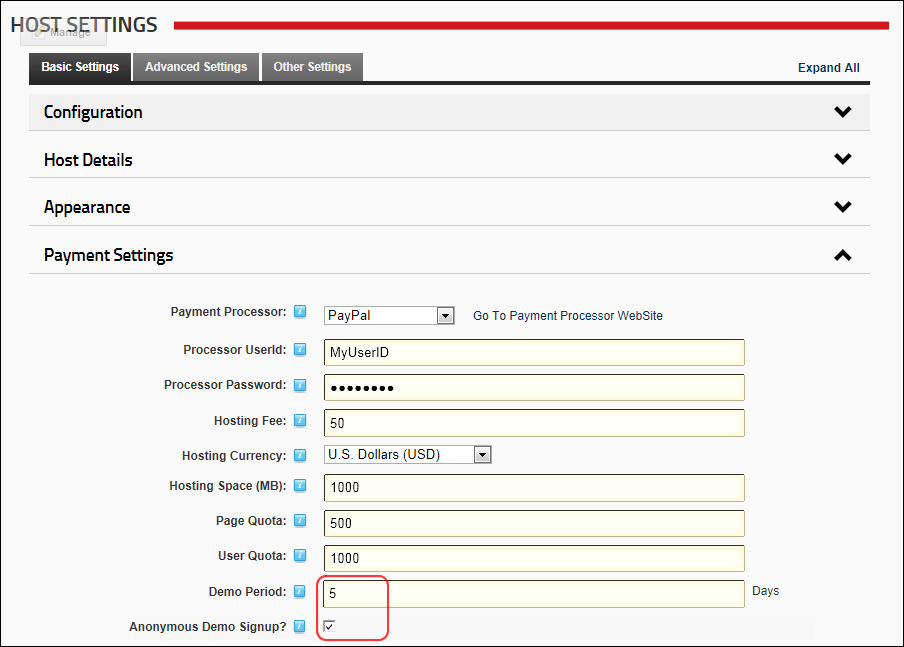

Enabling/Disabling Anonymous Demo Signup
How to enable anonymous site visitors to sign up for a demonstration site. If this setting is disabled, only the Host can create new sites.
- Navigate to Host >
 Host Settings.
Host Settings.
- Select the Basic Settings tab.
- Expand the Payment Settings section.
- Optional. In the Demo Period text box, enter the number of Days the demonstration site is available. Note: Enter
-1 for no end date.
- At Anonymous Demo Signup?, select one of the following options:
- Mark
 the check box to permit all visitors access to the Create New Child Site page. If this option is selected, a sign up link must be made available to enable sign up. See Step 6 for more details.
the check box to permit all visitors access to the Create New Child Site page. If this option is selected, a sign up link must be made available to enable sign up. See Step 6 for more details. - Unmark
 the check box if only the Host can create new child sites. This is the default setting.
the check box if only the Host can create new child sites. This is the default setting.

-
Click the Update button.
- Optional. To create a sign up link:
- Navigate to Host >
 Site Management.
Site Management. - Select Add New Site from the module actions menu - OR - Click the Add New Site link.
- Copy the URL from the Address field of the Web browser.
- Add this link on one or more pages as required using the Links module. The link will look something like this "http://awesomecycles.biz/dotnetnuke/tabid/17/ctl/Signup/mid/321/portalid/0/Default.aspx"